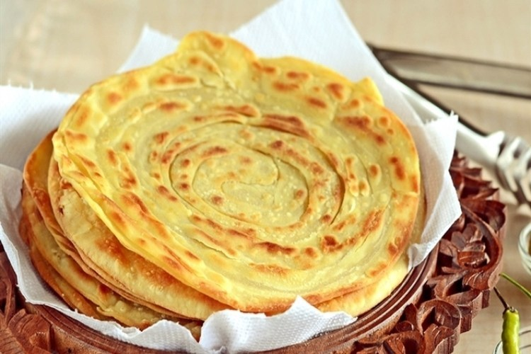

Resep Kue Maryam

Bahan-bahan :
- 250 gr tepung terigu
- 1 butir telur
- 3 sdm margarin, lelehkan
- 100 ml air hangat
- 2 sdm susu bubuk (optional)
- 1/2 sdt garam
- margarin leleh untuk olesan
- minyak untuk merendam
Langkah-langkah
- Campur semua bahan roti menjadi satu

- Uleni sampai halus, lumuri tangan sesekali dengan tepung uleni terus sampai adonan kalis

- Kalisnya adonan canai tidak sekalis adonan roti

- Bagi adonan menjadi beberapa bagian sesuai dengan yang diinginkan (tapi kalo bisa ya 12 bagian supaya pas)

- Lumuri adonan dengan minyak goreng yang sudah disiapkan tadi selama 1-3 jam

- setelah direndam selama itu maka adonan akan lebih lentur dan mudah dipipihkan

- Ambil salah satu adonan untuk dipipihkan, olesi dengan margarin cair. Gulung memanjang, linting berlawanan arah

- panaskan teflon dengan api kecil, jangan lupa lumuri sedikit margarin, kemudian panggang adonan yang sudah dipipihkan sampai matang

- Kue canai siap untuk disajikan dengan makanan pendamping yang manis